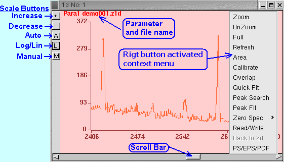

By default the spectra are displayed with Auto Scale on. To change the scale use the scale buttons appearing on the left. The + and - buttons increase and decrease the scale by a factor of 2. The Auto button recovers the Auto Scale mode. The L button is a toggle for Log or Linear scaling. The M button provides for a manual adjustment of the vertical scale. Both YMin and YMax can be set.
At the top is shown the name of the parameter whose spectrum is plotted. The filename shown alongside is the name of the file it was read from (if it was read) or the target file name (the name under which it will be saved) when acquisition or analysis is running.
The context menu can be brought up by a right-mouse click anywhere over the spectrum window.
If the mouse is clicked and dragged over the window, a region is maked which can then be zoomed etc. During this process the status of the cursors (channel number, calibrated value and counts) is displayed at the bottom left of the window. Note the following common mouse operations:
1. To obtain the channel number, calibrated value and counts for a specific channel: Click the mouse anywhere in the spectrum and then drag it across to the desired point. As the mouse is dragged, the second line shows the status of the moving mouse cursor.
2. To zoom and scroll: Click the mouse at one end of the desired region and drag to the other end of the region. It could be done as left-to-right or right-to-left. After that, select Zoom from the right-click context menu. The scroll bar at the bottom can then be used to scroll the spectrum. Note that the size of the scroll button is representative of the amount of zoom.
The cursors marked during click-and-drag are "soft". They are erased when a window is overlapped over the spectrum. However the cursors become "hard" as soon as the window is updated either manually (right-click Refresh, or Menu: Display - Refresh All) or at the next auto refresh time (according to the setting in the Refresh Rate selector). To get rid of the cursors, just click (do not drag) anywhere over the spectrum. While drawing new cursors, the old cursors will still be visible (if a refresh had taken place) but will disappear on Refresh.
The Zoom function has been explained above. The multilevel UnZoom function can be used to step bacwards in the Zoom heirarchy, while Full takes you back to the full unzoomed spectrum. The Refresh function updates the current window.
The other context menu functions Area, Calibrate, Overlap, Quick Fit, Peak Search, Peak Fit, Zero Spec, Read/Write, Back to 2d PS/EPS/PDF are explained in subsequent sections.